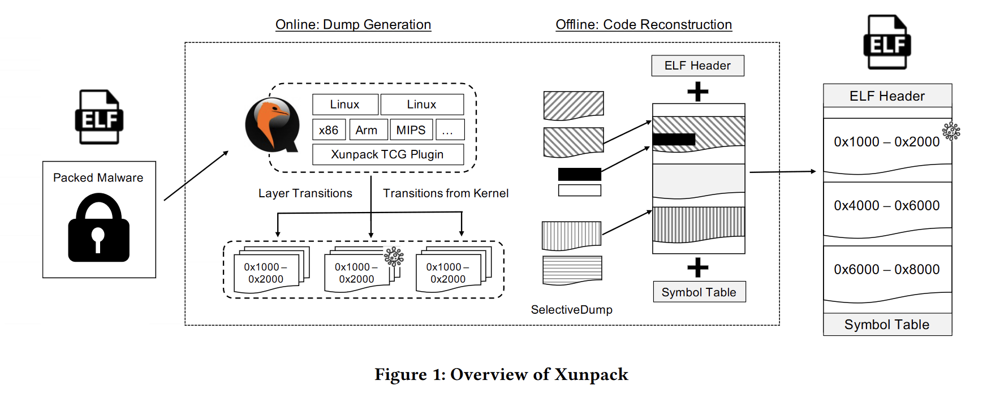

Xunpack: Cross-Architecture Unpacking for Linux IoT Malware
问题背景
IoT malware的特点在于架构的多样性，而现有的恶意程序检测工具大多只能处理x86程序，无法处理Arm和MIPS等架构的程序，并且难以对抗packer和anti-analysis技术。
Xunpack的设计原则
使用QEMU使恶意代码分析与特定架构脱钩，只要QEMU支持，Xunpack就能解压任何架构的恶意软件。
贡献点
- 设计并实现了首个针对IoT malware的跨架构unpacker。
- 引入了SelectiveDump，这是一种对分散在memory dump中的恶意软件原始代码进行重建的技术。
- 使用真实世界的ELF packer进行实验，证明Xunpack的抗分析能力。
Xunpack的两个阶段
-
Online analysis for dump generation
使用QEMU的system-level emulation和tiny code generator(TCG)插件接口开发了dump generation module。用于使用独立于体系结构的方式捕获两类事件：
自修改代码的执行和从内核到用户区目标代码的转换。 -
Offline analysis for original code reconstruction from those dumps
论文引入了
SelectiveDump技术，通过在memory dump中为原始代码的特定部分寻找候选内存区域并选择最合适的区域重建原始代码。SelectiveDump将内存区域划分成多个分块，计算和比较每个内存区域的熵值并进行选择，从而对抗VI型packer（VI型packer在执行的任何时刻都只会unpack出原始代码的一小部分，不存在某个时刻能unpack出完整的原始代码）。
Xunpack的挑战
- 识别恶意代码的执行。Xunpack建立在QEMU的系统仿真上，需要将运行的malware与其他进程分开，而不依赖于特定的体系结构和平台。现有研究大多根据进程线程标识符（PID，TID）或特殊用途寄存器（CR3或ASID）进行识别，这些方法都依赖于底层架构。
- 捕获目标代码中的特定事件，例如从系统调用返回，而无需依赖于特定架构指令的执行，如sysret。
- 内存转储，即使从虚拟内存地址到物理地址的转换并不总是可能的。一些CPU，例如MIPS架构，不支持用于内存地址转换的page-table-walk，因此我们始终无法解析我们需要转储的虚拟地址范围。
- VI型packer，目前还没有针对这类packer的unpack方法。
论文实验：
- unpack使用elfpack打包的14种不同架构的二进制文件，展示Xunpack的跨架构能力。
- unpack使用11种真实Linux ELF packer打包的二进制文件，并与现有unpacker进行比较。
BACKGROUND
1. Malware Unpacking
unpacking是静态分析或逆向分析之前的必然步骤。最原始的unpacking方法使用调试器手动脱壳。自动化unpacker大多使用write-and-then execution技术，将程序在运行过程中动态写入的内存区域标记为dirty memory，当dirty memory被执行时生成memory dump。然而当执行一个packed malware，write-and-then execution可能会产生许多memory dump，只有其中一部分包含程序的原始代码，需要通过某种方法识别包含原始代码的dump。主要有以下几种方法：
- 最原始的方法选择等待一定时间后生成dump，基于原始代码很可能在恶意软件执行后期出现的假设。
- 反病毒扫描。根据恶意代码签名的模式匹配结果来确定带有原始代码的dump。由于恶意签名可能与原始代码匹配，而不与packer代码匹配，因此可以通过是有命中签名判断unpacking过程在哪一点完成。
- 熵。加壳程序的熵值较高，因此熵值较低的dump更可能包含原始代码。
- code-to-data ratio（C2DR）。C2DR高的dump更可能包含原始代码。
2. Packer Taxonomy
论文SoK: Deep Packer Inspection将packer分为6类：
- Type Ⅰ：由single unpacking layer组成，执行unpacking routine后跳转到原始代码。
- Type Ⅱ：包含多个unpacking layer，顺序执行各层。
- Type Ⅲ：包含多个unpacking layer，循环执行各层，在各层之间来回切换，形成更复杂的拓扑结构，如循环。
- Type Ⅳ：由单层或多层unpacking layer构成，其中有些layer不仅负责unpack，还负责hook和插桩。交错执行unpacking layer和原始代码。
- Type Ⅴ：类似Type Ⅳ，但包含原始代码的unpacking layer有多个帧，当执行到某个帧的时候这个帧才被unpack。因此memory dump中只包含在分期期间执行的原始代码。
- Type Ⅵ：类似Type Ⅴ，但在执行完原始代码后会重新打包执行过的原始代码。因此memory dump中只包含在dump时刻刚刚执行过的原始代码。这种技术称为shift frame decoding。
MOTIVATION
1. Lack of tools for diverse architectures
针对非x86 malware的unpacking技术很少，而IoT malware大多是非x86架构（88%）。
2. Lack of resistance against anti-analysis
-
Malformed ELF Header
Process-level emulation通常会从可执行文件header中收集仿真需要的信息，但malware作者经常修改这些字段，如UPX会修改ELF头中的数据。
-
Dual-mapping
这种技术通过将一个物理内存区域映射到两个不同的虚拟地址区域，扰乱了write-and-then-execute的unpack过程。malware使用一个地址来写入unpacked code，使用另一个地址来执行这段代码，使得写入和执行的虚拟内存地址不同。ELFCrypt使用了类似技术，首先通过memfd_create创建一个文件描述符，用于将unpacked代码写入内存，然后使用fexecve执行unpacked代码。由于通过文件描述符写入的缓冲区地址不会暴露，因此写入后执行方法无法识别写入代码的内存地址。
-
Shift frame decoding
Kiteshield使用这种技术，在每个函数的入口和出口都设置了hook，并使用ptrace捕获它们的执行过程，以便解码和重新编码。
-
Invocation of unsupported system calls
通过调用handler缺失或没有正确实现的特定系统调用来干扰仿真分析。为malware分析准备足够的进程级仿真系统调用handler是一项挑战。例如截至6.0.50版，QEMU的进程级仿真不支持ptrace和execveat系统调用。即使仿真器实现了所需的素有handler，它们也可能导致malware通过观察仿真器与真实环境的行为差异来检测仿真器。
研究范围
- 排除了使用Perl和Python等脚本语言编写的恶意软件，专注于编译后的ELF格式可执行文件，它们构成了IoT malware的主体（94.3%）。
- 排除使用进程级虚拟化的打包程序。
- 排除死代码。
模型架构

Dump Generation
1. Target Code Identification
使用code tainting技术根据自修改代码的执行情况确定分析目标。首先解析ELF header，识别text段所在的内存地址区域，然后对区域内指令的内存写入操作做system-widely monitor，同时使用shadow memory（一种存储这些标签的数据结构）对写入区域进行标记，shadow memory将每个物理内存地址映射为一个标记。如果写入的内存区域被执行，会将其确定为分析目标。通过将内存写入指令的标签传播的内存区域就能准确跟踪目标代码的执行情况。这种设计可以解决Dual-mapping问题：由于在物理地址层监控内存的写入和执行，因此即使目标代码使用不同的虚拟地址写入和操作同一个物理内存区域，Xunpack也能准确识别目标代码的执行。
2. Dump Generation Trigge
为了确定原始代码被写入内存的时机，论文设计了两种触发事件：
-
layer Transitions
论文定义在unpack过程中每次迭代得到的unpacked code为一个layer。例如某段代码将数据写入一个特定的内存区域，这个区域就是一个layer。当Xunpack捕捉到layer之间的转换时，就会对写入的memory page生成一个dump。
-
Transitions to Target Code
将从内核空间到用户空间中的目标代码执行流转换作为生成dump的触发器。这些转换可能由系统调用返回、异常或中断处理、上下文切换引起。为了捕获这种转换，需要确定内核空间和用户空间的边界，而边界的位置与架构有关。为了解决这个问题，Xunpack在引导内核镜像（ELF格式的可执行文件）之前从内核镜像中提取内核在虚拟内存地址空间中的位置。具体来说，可以从section和program header中获取其位置。如果内核镜像被压缩，则使用vmlinux-to-elf从中提取原始内核。
Xunpack使用tiny code generation（TCG）插件接口（I/F）实现dump generation组件。TCG是QEMU内部使用的IR，支持多种架构。子操作系统的指令被翻译成TCG，然后再翻译成主机操作系统的指令，从而模拟子系统指令的行为。
Code Reconstruction
这一阶段重建ELF文件，使其尽可能接近原始代码。
1. Dump Selection
从dump文件中选择更接近原始代码的region或chunk。由于packed程序在执行时可能会多次覆盖某个内存区域，产生多个layer，从而得到多个dump文件。其中部分dump文件包含原始代码，现有方法通过计算每个dump文件的熵来选择。但是基于熵的方法往往无法完全恢复使用Type Ⅴ或Type Ⅵ packer加壳的程序，因为region边界与实际unpacking framge不一致（dump区域同时包含unpacked code和packed code）。Xunpack使用了更细粒度的划分方法SelectiveDump：将一个region划分为适当大小的块，计算每个块的熵，选择熵值较小的region作为结果。
2. ELF Reconstruction
重建流程分为三步
-
minimum ELF creation
创建一个最小的ELF可执行文件，包括header, NULL section, shstrtab section以及section header table等。
-
chunk insertion
将每个chunk或region插入到ELF可执行文件中相应的偏移位置。
-
symbol table reconstruction
与windows脱壳中重建IAT类似，区别在于Linux malware通常使用静态链接库，并丢失其符号信息，而windows malware通常使用动态链接库，更有可能保留导入函数名。识别静态链接库的函数名难度较大，这一步是可选的。具体而言Xunpack使用IDA FLIRT或签名匹配等外部工具恢复这些函数的符号信息。